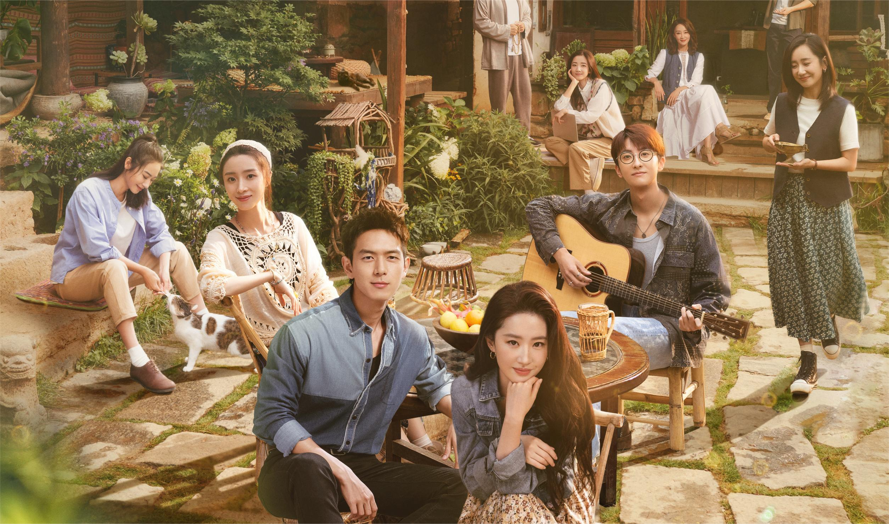

剧照详情
- 

剧情简介
《去有风的地方》是由丁梓光执导，刘亦菲，李现领衔主演，胡冰卿、牛骏峰特邀主演，吴彦姝、董晴、范帅琦、马梦唯、赵子琪、马柏全主演，涂松岩、刘佳、郝平、龚蓓苾、姚安娜特别出演的田园治愈剧。该剧讲述了辞职后来云南短住的许红豆，意外邂逅了放弃高薪回乡兴业的谢之遥，并在入住有风小院后，结识了带着不同经历和故事来到这里的租客们的故事。
许红豆因为闺蜜去世，生活和工作陷入低谷，她独自前往大理云苗村的“有风小院”休息调整。在那里，她认识了辞去高薪工作回乡创业的当地人谢之遥，还有一群从大城市过去的同龄人。在日常相处中，谢之遥感受到了许红豆的善良和认真，便邀请许红豆用她多年的酒店从业经验，帮助当地提升员工服务意识，为发展云苗村的文化旅游事业助力。同时，许红豆也被谢之遥相邀建设家乡，让乡亲们可以壮有所用、老有所依的理想打动，两人互生情愫，最终走到了一起。在大理，许红豆和小院里的其他人被当地村民的勤劳与韧性和他们苦辣酸甜的人生感动了，她们重新审视过往，互相帮助、互相启示，在有风的地方整理好心情，获得力量重新出发。
她骨子里倔强，好面子不服输，也不想把脆弱的一面示人。工作中认真负责，亲切热情，能屈能伸。工作外对人却是不留情面，不好惹不圆滑的样子，像一头在城市中横冲直撞的小狮子。一直以来拼命的工作，节俭生活，想要扎根在北京。直到身体和心理都亮起红灯，才猛然发现，陷入了得不偿失的循环里。